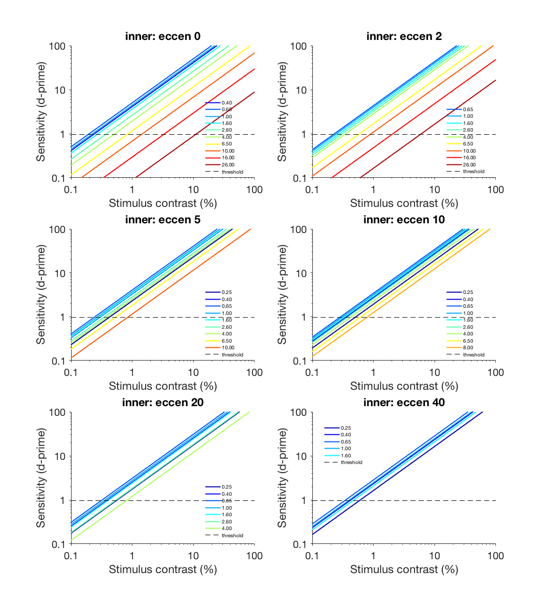
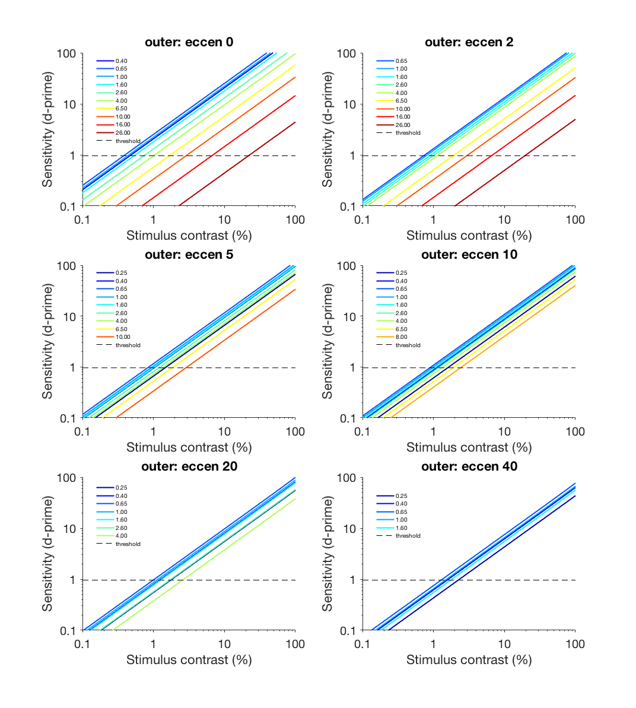
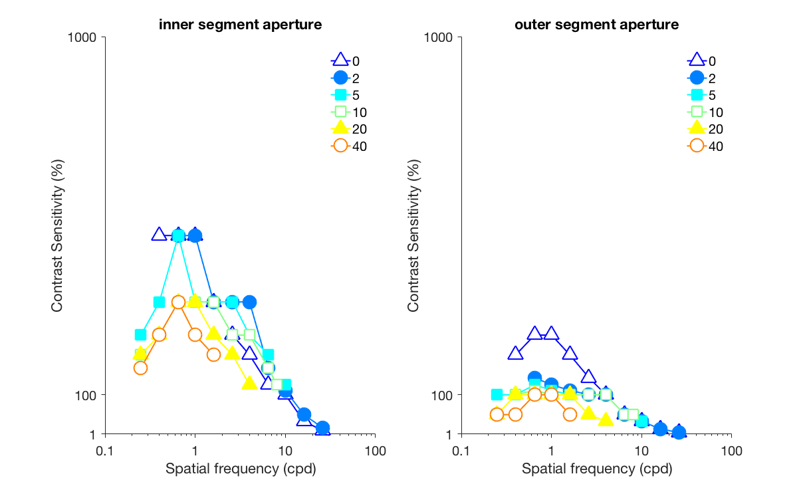

Contents
s_visualizeResults.m
0. GENERAL AND EXPERIMENT PARAMETERS
resultsDir = fullfile(banksRootPath, 'results');
figureDir = fullfile(banksRootPath, 'figures');
saveFigures = true;
whichObserver = 'ideal';
allSegments = {'inner','outer'};
expParams = loadExpParamsBanks1991;
r_inner = cell(length(expParams.eccen(:,1)),1);
r_outer = r_inner;
for ec = 1:length(expParams.eccen(:,1))
inner = load(fullfile(resultsDir, sprintf('dPrime_%s_inner_eccen%d.mat', whichObserver, expParams.eccen(ec,1))));
outer = load(fullfile(resultsDir, sprintf('dPrime_%s_outer_eccen%d.mat', whichObserver, expParams.eccen(ec,1))));
r_inner{ec} = inner.thisdPrime;
r_outer{ec} = outer.thisdPrime;
end
1. PLOT CONTRAST LEVELS as a function of ECCENTRICITY and CONE SEGMENT (Fig 3)
threshold = 1.36/sqrt(2);
for ii = 1:12, labelSF{ii} = sprintf('%1.2f',expParams.sf(1,ii)); end
cmap = jet(size(expParams.sf,2));
allData = {r_inner,r_outer};
sensitivity = NaN(2,length(expParams.eccen(:,1)), length(expParams.sf(1,:)));
for s = [1,2]
figure(s); set(gcf, 'Color', 'w', 'Position', [28, 148, 1072, 1193]); clf;
dprime = allData{s};
for ec = 1:length(expParams.eccen(:,1))
idx = find(~isnan(expParams.sd(ec,:)'));
subplot(3,2,ec); hold all;
for ii = idx'
plot(expParams.contrastLevels*100, dprime{ec}(:,ii), 'Color', cmap(ii,:,:), 'LineWidth',2)
[val_tresh, idx_thresh] = min(abs(dprime{ec}(:,ii) -threshold));
sensitivity(s, ec, ii) = 1./(expParams.contrastLevels(idx_thresh));
end
plot([0.1 100], [threshold, threshold],'k--')
xlim([0.1 100]); ylim([0.1 100]);
xlabel('Stimulus contrast (%)')
ylabel('Sensitivity (d-prime)'); title('Figure 3')
set(gca, 'XScale', 'log', 'YScale', 'log')
set(gca, 'XTick', [0.1, 1, 10, 100], 'XTickLabel', {'0.1', '1', '10', '100'},'TickDir', 'out', 'FontSize', 20)
set(gca, 'YTick', [0.1, 1, 10, 100], 'YTickLabel', {'0.1', '1', '10', '100'},'TickDir', 'out', 'FontSize', 20)
legend({labelSF{idx}, 'threshold'}, 'FontSize', 10,'Location', 'Best'); legend boxoff
title(sprintf('%s: eccen %d', allSegments{s}, expParams.eccen(ec,1)))
end
if saveFigures
print(fullfile(figureDir, sprintf('Fig3_dPrime_%s_%s', whichObserver, allSegments{s})),'-dpng');
end
end
 
2. PLOT CONTRAST SENSITIVITY as a function of SPATIAL FREQUENCY (Fig 5)
for ii = 1:6, labelEccen{ii} = sprintf('%d',expParams.eccen(ii,1)); end
M = {'^', 'o', 's', 's', '^', 'o'};
edgeColors = jet(length(expParams.eccen(:,1)));
faceColors = edgeColors;
faceColors(1,:) = [1 1 1];
faceColors(4,:) = [1 1 1];
faceColors(6,:) = [1 1 1];
figure(3); clf; set(gcf, 'Color', 'w', 'Position', [62, 611, 1217, 734]);
for s = [1,2]
subplot(1,2,s); hold all;
for ec = 1:length(expParams.eccen(:,1))
plot(expParams.sf(1,:),squeeze(sensitivity(s,ec,:)), ...
'Color', [edgeColors(ec,:)], ...
'Marker', M{ec}, 'MarkerSize', 20, ...
'MarkerEdgeColor', edgeColors(ec,:), ...
'MarkerFaceColor', faceColors(ec,:), ...
'LineWidth',2);
end
set(gca,'XScale','log'); xlim([0.1 100]); ylim([1 1000]);
xlabel('Spatial frequency (cpd)')
ylabel('Contrast Sensitivity (%)')
set(gca, 'XTick', [0.1, 1, 10, 100], 'XTickLabel', {'0.1', '1', '10', '100'}, 'TickDir', 'out', 'FontSize', 20)
set(gca, 'YTick', [1, 100, 1000], 'YTickLabel', {'1', '100', '1000'}, 'TickDir', 'out', 'FontSize', 20)
title([allSegments{s} ' segment aperture'])
box off;
legend(labelEccen, 'FontSize',20, 'Location', 'Best'); legend boxoff
end
if saveFigures
print(fullfile(figureDir, sprintf('Fig5_SpatFreqLimits_%s', whichObserver)),'-dpng');
end
